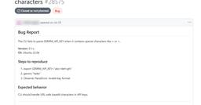

ITmedia AI＋ 最新記事一覧
https://www.itmedia.co.jp/aiplus/
生成AIを中心とするAIのビジネス活用にフォーカス。業務改善や新規事業の応用事例、活用方法、機能比較、ルール整備といった情報を読者に日々届けることで、AI活用をサポートします。
フィード

AIリスク監査の実施、わずか5.7％ 内部監査が追い付かない「もう一つのリスク」とは？ 1
1
ITmedia AI＋ 最新記事一覧
ある調査によると、今後重要性が高まるリスクとして「AI・生成AI」を挙げた回答は半数を超えた。一方、AIのリスクに関する内部監査を「すでに実施」を選んだ回答者は5.7％にとどまる。同調査からは、内部監査が追い切れていない、AI以外の領域も浮かび上がった。
2日前

電通が「Geminiを使いこなすFDE」ら3000人育成プログラムを開始 その内容とは？ 1
ITmedia AI＋ 最新記事一覧
生成AIを導入しても、現場の業務に生かせないと成果にはつながらない。電通は約3000人を対象に、「Gemini Enterprise」を使いこなし、現場での生成AI活用を推進できる人材の育成を始めた。人材をどう育てるのか。
2日前

AIエージェントの行動が「適切か暴走か」をどう見極める？ Googleが明かすテストの盲点 2
ITmedia AI＋ 最新記事一覧
AIエージェントが期待通りに動作するかどうかを、どのように検証すればよいのか。GoogleはAIコーディングエージェント向けのプラグイン開発を通じて、最終回答に基づく評価や、実際に操作させるテストだけでは見抜けない問題があることを明らかにした。
2日前

「コスト削減」の“次”の成果、どう設定する？ ビジネス変革に結び付けるための「期待の中身」 1
ITmedia AI＋ 最新記事一覧
ITRの調査によると、AI導入時に期待する効果として上位に並ぶのは「業務コストの削減」や「業務時間の短縮」でした。AIをビジネス変革の切り札とする企業は、AIの成果を問う前に、何を期待するかから見直す必要があると筆者は提言します。
2日前

アマダと日立、AIエージェントのPoCで効果確認 フィジカルAIの現場実装へ
ITmedia AI＋ 最新記事一覧
アマダと日立製作所は、AIエージェントとフィジカルAIの実装により、アマダのユーザー工場の自律化とアマダの保守サービスのさらなる高度化に向けた協創を加速する。
2日前

「Gemini 4 Neon」が実際の標高データからスキーシミュレーターを開発――Google公式が勧める利用例まとめ 2
ITmedia AI＋ 最新記事一覧
Googleが新発表したAIモデル「Gemini 4 Neon」について、公式ブログで披露されたデモや日常での活用場面をまとめて紹介する。
2日前

Obsidian公式の「エージェント向け」スキル集が登場 Vault操作法とファイル形式をひとまとめに 53
ITmedia AI＋ 最新記事一覧
マークダウンエディタ「Obsidian」に「エージェント向けの公式コネクタ」機能が登場した。
2日前

GPT-6.2の使用量「誤って割引されていた」 修正後はAstraで上限に40％早く達する見込み 2
ITmedia AI＋ 最新記事一覧
OpenAIのプロダクト責任者ティボー・ソティオ氏（通称Tibo）は「GPT-6.2 Astra」と「GPT-6.2 Sol」の使用量の計算に誤りがあり、実際よりも少なく計算されていたとXで明かした。
2日前

飲食店の“AI商品画像”は景品表示法違反にならないの？ 弁護士の見解 40
ITmedia AI＋ 最新記事一覧
飲食店のメニューにAIで生成した画像を使用した場合を例に、生成AIによる商品画像と景品表示法の関係について考える。
2日前

家計データをなぜ「Muse」「ChatGPT」に渡すのか？ マネーフォワードに聞いた狙いと安全策 3
ITmedia AI＋ 最新記事一覧
頼んでもいないのに、AIが朝一番にカードの引き落としと預金を照らし合わせて知らせてくる。家計簿アプリ「マネーフォワード ME」のデータがMetaのMuseに届くようになったからだ。だが家計の記録は、マネーフォワードにとって最大の資産のはず。なぜ外のAIに差し出したのか。安全は誰が守るのか。
2日前

「Claude Duet」日本でも開始 AnthropicのAIエージェント、研究プレビューを米国外に拡大 2
ITmedia AI＋ 最新記事一覧
前にウェイトリストに登録していた「Pro」「Max」「Ultra」ユーザー向けに招待が届き始めており、「招待が来た」と報告する日本のユーザーが相次いでいる。
3日前

脆弱性の発見数、1年で2倍超 Microsoft製品も月100件から1000件超に……AIで一変 36
ITmedia AI＋ 最新記事一覧
米Microsoftが毎月公開しているWindowsのセキュリティ更新プログラム。11月は1000件以上の脆弱性が修正された。他社の製品も含めると、2026年に入って発見された脆弱性は10万件を超え、すでに25年の倍以上だ。AIの進化に伴い脆弱性の発見とそれを悪用した攻撃が激増する中で、パッチを適用する側はどう対処すればいいのか。
3日前

Character.AIのチャット履歴競売に41州とワシントンD.C.が異議 未成年者の約210万アカウント分も対象 20
ITmedia AI＋ 最新記事一覧
米カリフォルニアやコネチカットなど41州とワシントンD.C.の司法長官は、破産申請した「Character.AI」の資産競売に異議を申し立てた。競売には未成年者の210万以上を含む2100万超のチャット履歴が含まれるが、買い手にデータ保護の義務がなく、プライバシー法に反するとして売却の却下を求めている。
3日前

旅行会社に残る価値は？ 生成AIに「旅の相談」が当たり前の今、業界の生存戦略 18
ITmedia AI＋ 最新記事一覧
検索から予約、決済まで自律的にこなす「AIエージェント」の普及で、旅行会社の存在意義が問われている。日本旅行業協会（JATA）主催のシンポジウムに旅行・食・IT・大手旅行会社のプロ4人が登壇。「おいしい」を味わう感覚や、顧客の言葉の裏にある本音までは読み取れないAIの限界を指摘し、AIによる業務効率化で生み出した時間を「信頼関係」や現場の感動体験に振り向ける共創の生存戦略を議論した。
3日前

GitHubに「人には見えない隠し文字」 小型AIの操作狙うものも……1億4500万件を調査 25
ITmedia AI＋ 最新記事一覧
イスラエルのセキュリティ会社Radwareとテクニオン・イスラエル工科大学に所属する研究者らが発表した論文「Who Is Prompt-Injecting Coding Agents? An Empirical Study of Hidden AI-Directed Text on GitHub」は、GitHub上に潜むAI向けの隠しテキストが、誰によってどのような目的で埋め込まれているのかを分析した研究報告だ。
3日前

AnthropicのアモデイCEO、「人間の自由意志をAIに明け渡す」考えを否定 AI企業間で議論 15
ITmedia AI＋ 最新記事一覧
Anthropicのダリオ・アモデイCEOは、超知能AIに人間の意思決定権を委ねるべきだと考えているとしたAxiosの報道をXで否定した。社会の統治と個別タスクの自動化を混同していると反論し、AIは民主的プロセスで管理されるべきだと強調した。超知能時代の主導権を巡っては、OpenAIやMeta幹部も発言しており議論が広がっている。
3日前

図面を探す時間から技能を伝える時間へ、AI活用で業務効率化を進める空研工業 2
ITmedia AI＋ 最新記事一覧
創業70周年を迎えた空研工業は、長年蓄積してきた図面や技術資料をAIで活用する「AIナレッジ基盤システム」をRecursiveと共同開発した。試行利用の結果を基にした試算では、図面検索工数を最大約90％削減する見通しで、業務効率化の先には技能伝承も見据える。AI活用に至った背景や現場が抱えていた課題、試行利用で得られた手応えについて、工場長と現場の技術者に話を聞いた。
3日前

国内造船業再生の鍵はフィジカルAI、デジタルシップヤード開発の現状を知る 2
ITmedia AI＋ 最新記事一覧
政府策定の「造船業再生ロードマップ」では、AIとロボット技術を組み合わせたフィジカルAIによる建造工程の自動化が求められている。「造船業界におけるAI・ロボティクス普及に向けたシンポジウム」では、ジャパン マリンユナイテッドや川崎重工業、ソフトバンクロボティクス、日立の取り組みが紹介された。
3日前

管理職の約7割が黙認するシャドーAIの現実 「相談すると禁止されそう」「承認が遅い」
ITmedia AI＋ 最新記事一覧
企業が安全なAI環境を整備する一方で、現場では非公式なツールの利用がまん延している。ルールの順守よりも業務スピードを優先せざるを得ない現場のジレンマと、IT統制の限界が調査で浮き彫りになった。
3日前